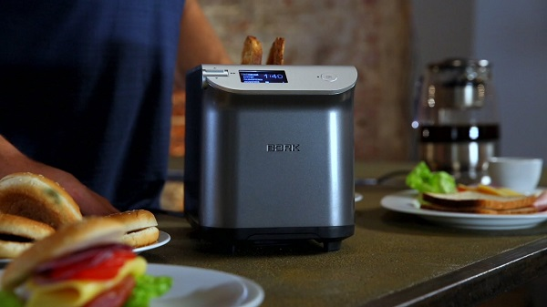
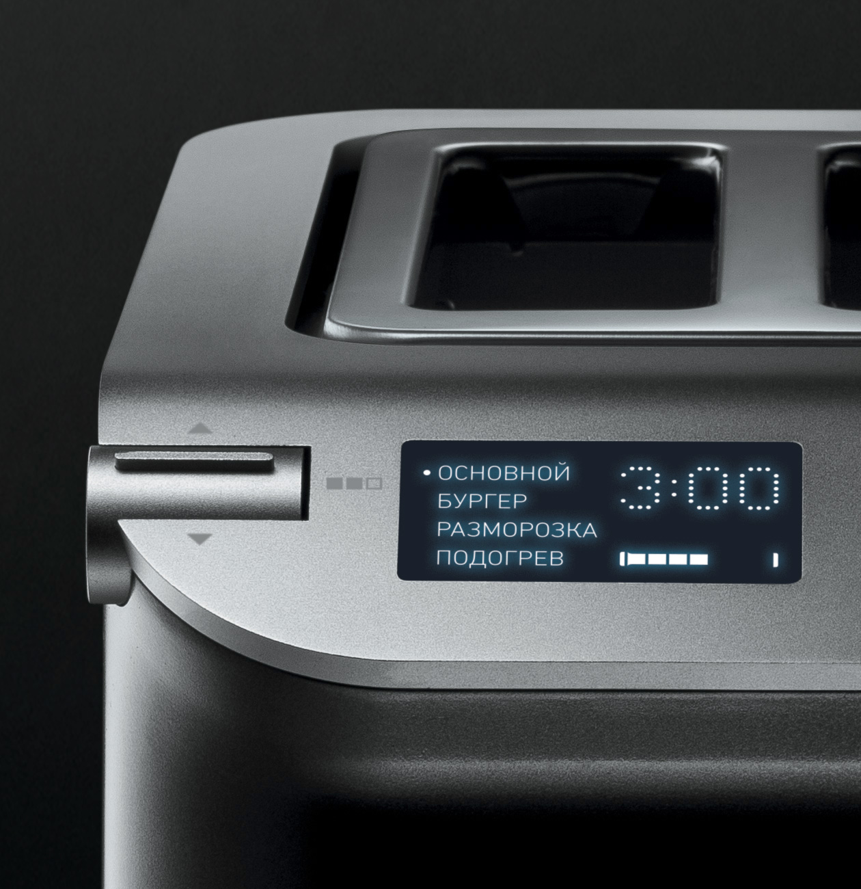
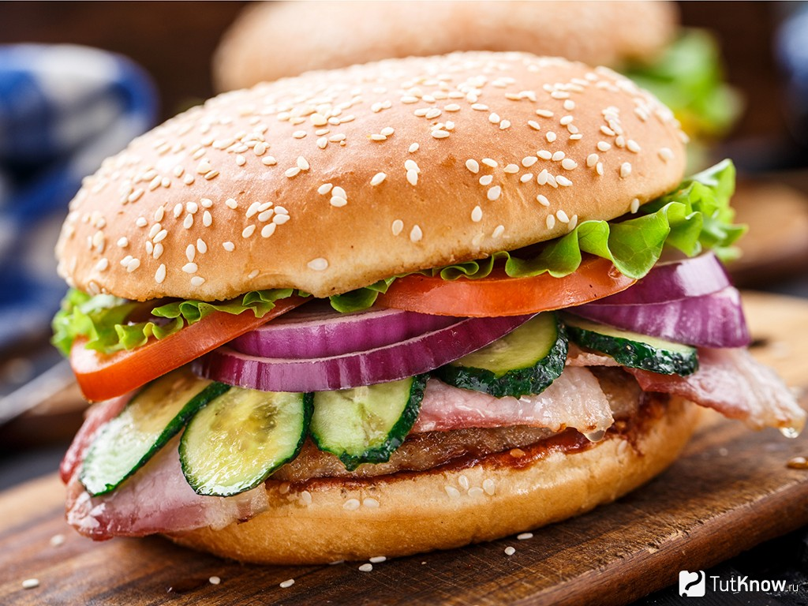
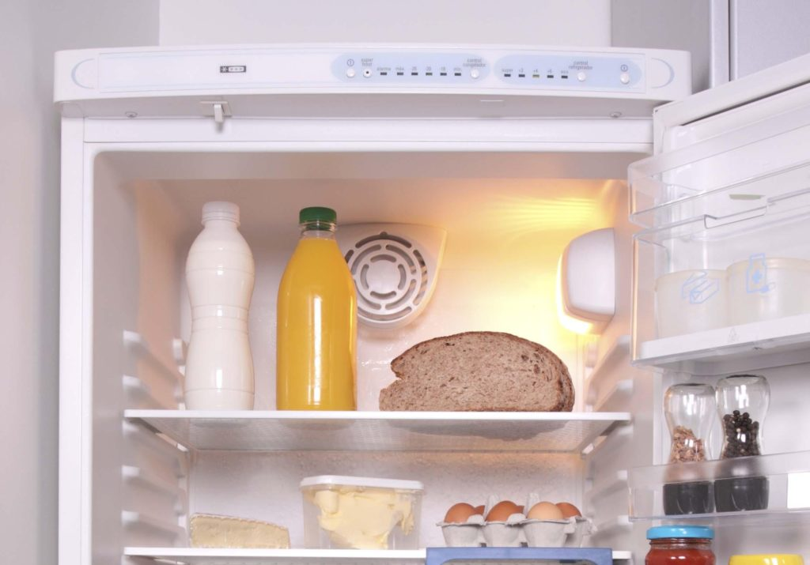
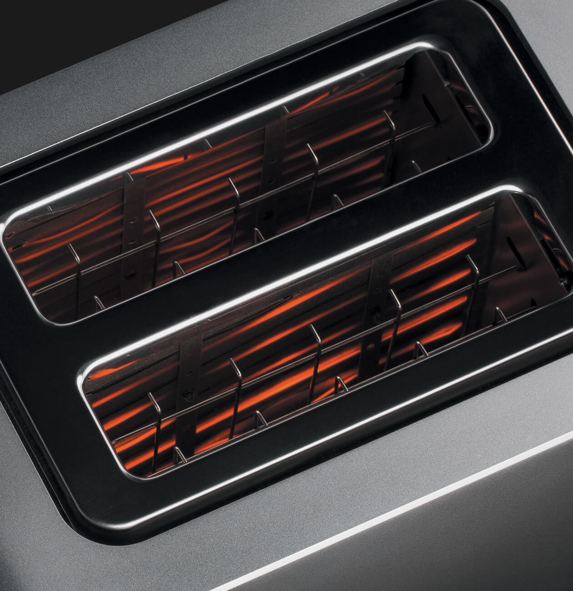
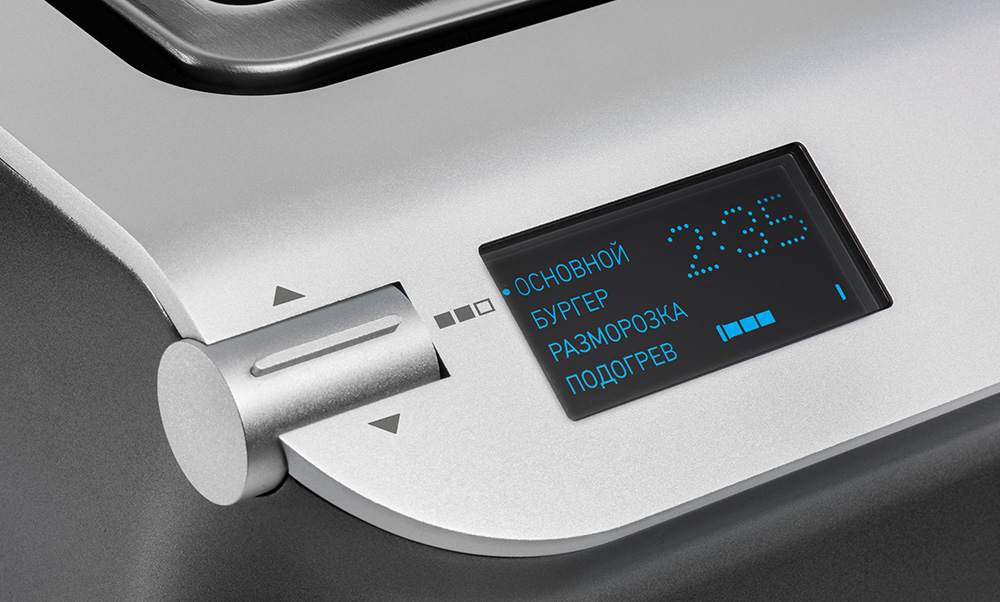
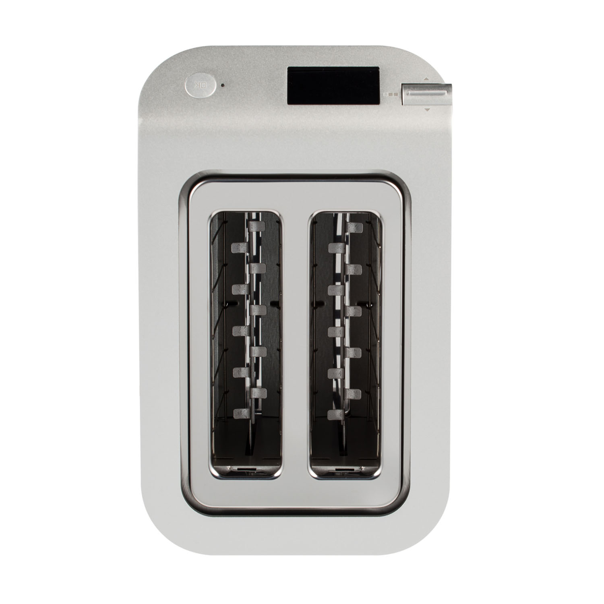

Текст Т781
Стильный помощник с интеллектуальной системой управления.
Автоматические режимы
Тостер оснащен 4 режимами.
Основной
Тосты – это мощный источник витамина B, C, железа, магния и многих других компонентов, которые укрепляют иммунную систему и помогают чувствовать себя превосходно. Поджаренные тосты менее калорийны, чем обычные мучные изделия, поэтому диетологи рекомендуют их людям, которые хотят потерять лишние килограммы. А так же тосты очень полезны для желудочно-кишечного тракта.
Бургер
Приготовить свой уникальный бургер и сделать его потрясающе вкусным, поможет функция односторонней прожарки. Равномерная хрустящая корочка на поверхности булочки не позволит соусу впитаться в хлеб.
Разморозка
С каждым днём растёт количество людей замораживающих хлеб. Этому способствует 2 основные причины:
- Хлеб значительно дольше хранится;
- Это делает хлеб более полезным. Ведь замораживая, а затем подсушивая хлеб в тостере, мы преобразуем углеводы с высоким гликемическим индексом в углеводы с низким гликемическим индексом. А они в свою очередь преобразуются в энергию равномерно, и мы успеваем ее потратить. В результате в организме не откладывается жир!
Подогрев
Что может быть вкуснее утренней чашечки бодрящего кофе и хрустящего ароматного тоста. В тостере Т781 увеличенные загрузочные слоты, это решение позволяет прожаривать хлеб разного размера, не ограничивая Вас во вкусах.
Тосты по вашему вкусу
Модель T781 позволяет выбрать одну из 7 степеней поджаривания ломтиков. А благодаря интеллектуальной системе управления, при приготовлении нескольких порций подряд тостер автоматически сокращает время обжаривания в зависимости от степени нагрева прибора, чтобы не допустить подгорания хлеба.
Обзор «вокруг»
Информативный LCD-дисплей с русскоязычным интерфейсом, отображает текущий режим, степень обжарки и оставшееся время приготовления. А плавный наклон передней панели и высококонтрастный LCD дисплей, как в дорогих авто, позволяют с лёгкостью контролировать все процессы работы тостера.
Тихая работа
Специальный элемент подъёма и опускания тостов, работает без пружин. Это позволяет тостеру работать очень тихо, не издавая «выстрела» по окончанию режима и избегая вылетающих во все стороны крошек хлеба.
Патенты BORK

Для лёгкого передвижения по древу меню, компания BORK специально разработала и запатентовала электронный шатл – Rotary Knob. Приятные, запатентованные звуковые сигналы сопровождают Вас в меню, а так же подскажут об окончание работы тостера.
Энергосберегающий режим
Тостер автоматически перейдет в режим энергосбережения при отсутствии действий в течение 3 минут.
Технические характеристики
Напряжение: 220–240 В.
Частота: 50 Гц
Мощность: 840–1000 Вт
Длина сетевого шнура: 1 м
Габариты (В×Ш×Г): 206×175×282 мм
Вес: 2,6 кг.
Сделано в Китае